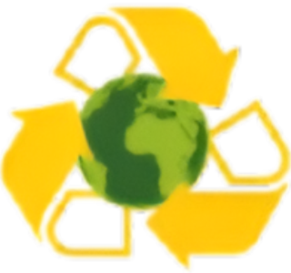

Somos uma plataforma inovadora de gestão de resíduos recicláveis, criada para facilitar e agilizar a coleta e o encaminhamento correto de materiais descartados por Organizações Sociais. Nosso sistema conecta diretamente essas organizações aos locais responsáveis pelo tratamento e reciclagem de resíduos, garantindo que o material seja destinado de forma eficiente, transparente e ambientalmente responsável. Sabemos que, até hoje, muitos processos de coleta e transporte de recicláveis ainda são lentos e burocráticos. Por isso, desenvolvemos uma solução que simplifica e automatiza o fluxo entre quem gera os resíduos e quem realiza o tratamento, promovendo segurança e agilidade em todas as etapas. Nosso objetivo é fortalecer o trabalho das Organizações Sociais, valorizar a reciclagem e contribuir ativamente para a construção de um futuro mais sustentável para todos.
A destinação correta de resíduos reduz a poluição, evita o descarte inadequado em rios, solos e áreas urbanas, além de preservar recursos naturais ao permitir que materiais sejam reciclados e reutilizados. Esse processo também fortalece a economia circular, gera empregos no setor de reciclagem e promove uma cultura de responsabilidade ambiental. Ao encaminhar corretamente os resíduos, todos colaboram para um futuro mais limpo, saudável e sustentável.